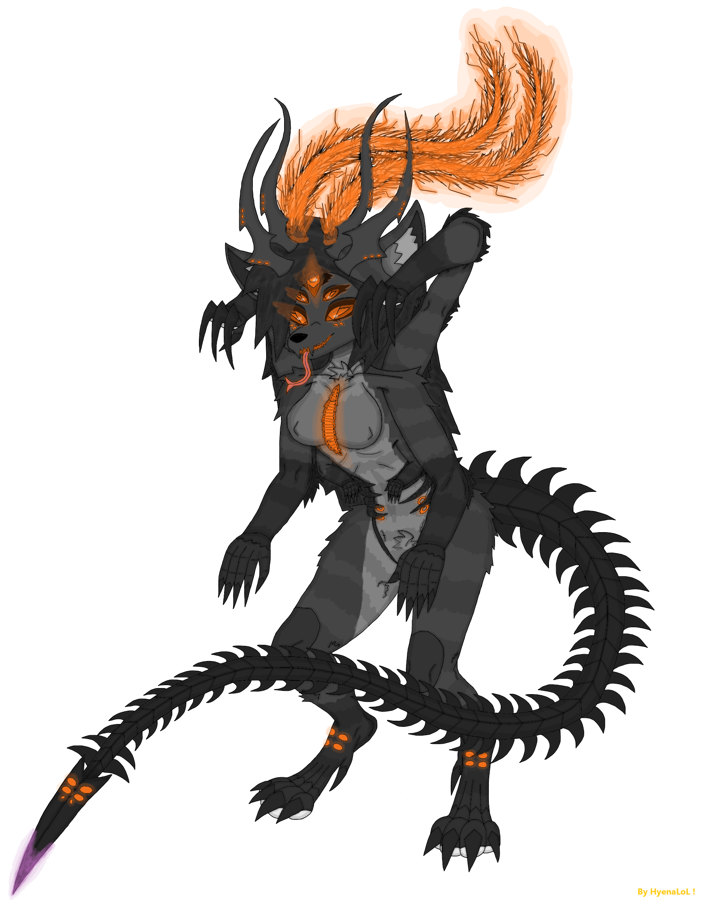
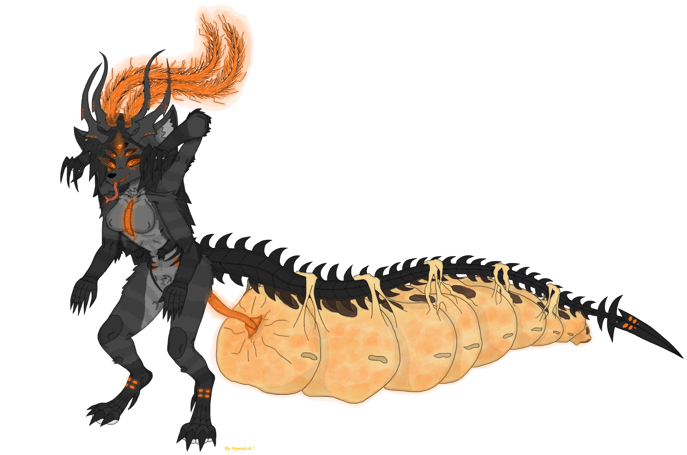
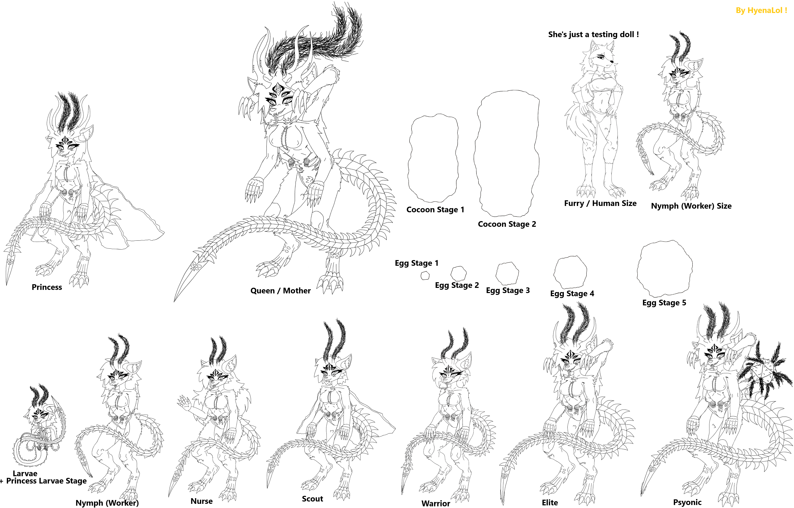

.png)
SheFurrs Castes & Stages - ШеФур Касты и Стадий -
Content - Контент -
- Main of Castes & Stages. Главное о Кастах и Стадиях.
- Stage - Egg. Стадия - Яйцо.
- Stage - Larvae. Стадия - Личинка.
- Stage - Cocoonization (Pupae). Стадия - Коконизация(Куколка).
- Caste - Nymph (Worker). Каста - Нимфа(Работница).
- Nanitic. Нанитик.
- Caste - Nurse. Каста - Нянька.
- Caste - Scout. Каста - Разведчица.
- Caste - Warrior. Каста Воительника.
- Stage & Caste - Elites. Каста и Стадия - Элитная.
- Caste - Psyonic. Каста - Псионица.
- Gamergate & Gamergated Queen. Гамергат и Гамергатизированая Королева.
- Caste & Stage of Queen - Princess. Каста и Стадия Королевы - Принцесса.
- Caste & Stage of Queen - Queen. Каста и Стадия Королевы - Королева.
- Castes & Stages - Size Comparison. Касты и Стадий - Сравнение Размеров.
Main of Castes & Stages - Главное о Кастах и Стадиях -
Overview : Обзор :
The SheFurrs caste system is not typical. It is not just hive-mind - it is hive-mind + individuality at the same time. Every SheFur is: connected, synchronized, resonant with the hive, but still a separate independent personality. IMPORTANT - the caste system is not determined at the egg stage and is not pre-assigned. The caste differentiation begins only during the nymph(Worker) phase, when the individual reaches functional maturity as a nymph(Worker). Body deformations tied to caste after the nymph(Worker) stage mostly occurs in the individual's private living quarters. At this stage the hive itself selects which caste the nymph(Worker) will develop into. After the selection, the organism undergoes a metamorphosis - but unlike insects that form cocoons, this transformation happens externally in real time without cocooning. Also all the castes and stages are different in: sizes / weights / heights - not strenghtlly. The mechanism is similar to that of termites: the hive regulates the caste outcome during the nymph(Worker) stage, shaping the individual into its final role. The youngers prefer to feed on milk and dairy-based substances first, rather than meat. Кастовая система ШеФур нетипична. Это не просто разум улья - это разум улья + индивидуальность одновременно. Каждая ШеФур: связана, синхронизирована, резонирует с ульем, но остаётся отдельной независимой личностью. ВАЖНО - кастовая система не определяется со стадий яйца и не назначается заранее. Дифференциация каст начинается только на стадий нимфы(Работницы), когда особь достигает функциональной зрелости как нимфа(Работница). Деформаций тела связанные с кастой после стадий нимфы(Работницы) в основном происходят в личных жилых помещениях особи. На этом этапе сам улей выбирает в какую касту нимфа(Работница) будет развиваться. После выбора, организм проходит метаморфоз - но в отличий от насекомьих коконов, эта трансформация происходит внешне в реальном времени без кокона. Также все касты и стадий различаются в: размерах / весах / ростах - но не сильно. Механизм похож на механизм термитов: улей регулирует исход касты на стадий нимфы(Работницы), формируя особь в её конечную роль. Молодняк предпочитает питаться молоком и молочкой первостепенно, нежели мясным.
Reproductive Note : Репродуктивная Заметка :
All castes except: queens / princesses / gamergates / false queens - are pseudo-females. They do not possess reproductive organs. They are not typical females, but functionally aligned with the female role in hive biology & lore. Все касты кроме: королев / принцесс / гамергатов / ложных королев - являются псевдо-самками. Они не имеют репродуктивных органов. Они не типичные самки, но функционально соответствуют женской роли в биологий улья и лоре.
Caste Determination : Определение Касты :
Caste is determined at the egg stage as a deffault nymph(Worker) (Except princesses), then after time by the hive / colony. Каста определяется на стадий яйца как обыкновенная нимфа(Работница) (Кроме принцесс), а затем со временем ульем / колонией.
Survival : Выживание :
Important that the meaning of Can live is directlly - CAN live, thats not mean they live all this time. Важно то что значение Может жить прямолинейно - МОЖЕТ жить, это не значит что они живут всё это время.
Stage - Eggs - Стадия - Яйца -

Appearance : Внешне :
SheFur eggs appear as orange-tinted initially small structures that later grows in size. They pass through five developmental stages. Eggs have a slimy, unsettling, semi-transparent membrane, and are not physically durable, requiring constant protection. Shape is 3D hexagonal form. Eggs emit orenge biolumen, glowing softly in darkness. Inside the egg we can see: embryonic fluid, embryon, and developing organism. Яйца ШеФур выгледят как небольшие структуры с оранжевым оттенком котороые позже увеличиваются в размере. Они проходят через пять стадей развития. Яйца имеют слизистую, тревожную, полу-прозрачную плёнку, и не обладают физической прочностью, поэтому требуют постоянной защиты. Форма 3д гексагональная. Яйца излучают оранжевый биолюмен, мягко светящийся в темноте. Внутри яйца можно увидеть: эмбриональную жидкость, эмбрион, и развивающийся организм.
Embryonic Fluid : Эмбриональная Жидкость :
Inside the eggs there is a liquid called embryonic fluid. It hardens and turns into a glass-like substance similar to ice or amber - Bright Thingy - which becomes a leftover resource after the larvae hatch from the egg. But the structure of the egg keeps this liquid inside it's egg membrane, preventing it from solidifying. Внутри яйц находится жидкость называемая эмбриональной жидкостью. Она твердеет и превращается в стеклоподобное вещество похожее на лёд или янтарь - Яркая Фигнюшка - которая становится остаточным ресурсом после того как личинка вылупляется из яйца. Но структура яйца удерживает эту жидкость внутри своей плёнки, не позволяя ей затвердеть.
Check all info about Bright Thingy in SheFur Weaponry Stuff page. Вся инфа о Яркой Фигнюшке находится на странице SheFur Weaponry Stuff page.
Growth : Рост :
A newly laid egg can fit into a human hand. As it develops, it grows significantly larger. Growth is driven by hive / colony - signals and proceeds automatically. Свежеснесённое яйцо может поместится в человеческую руку. По мере развития, оно становится значительно больше. Рост управляется сигналами улья / колоний и происходит автоматически.
The egg stage develops into a Larvae in about ~12 days (SheWorld time). Стадия яйца развивается в личинку примерно за ~12 дней (ШеВорлд времени).
Survival : Выживание :
Eggs require: comfort, warmth, and stable hive / colony conditions. They communicate through chemical and biological signals. Eggs are extremely dependent on the hive / colony environment. Outside the hive / colony - egg survives 5 hours (SheWorld time). In Earth-like water or ice structures - egg survives 8 hours (SheWorld time). Excessive star-light exposure can overheat and kill the egg. The egg's slime is a protective membrane, resistant to light fire and other environmental conditions. Яйцам необходимы: комфорт, тепло, и стабильные условия улья / колоний. Они общаются через химические и биологические сигналы. Яйца чрезвычайно зависимы от среды улья / колоний. Вне улья / колоний - яйцо живёт 5 часов (ШеВорлд времени). В водных или ледяных структурах похожих на земные - яйцо живёт 8 часов (ШеВорлд времени). Чрезмерное воздействие света звезды может перегреть и убить яйцо. Слизь яйца это защитная плёнка, устойчивая к лёгкому огню и другим условиям среды.
Stage - Larvae - Стадия - Личинка -

Appearance : Внешне :
Larvae hatches from fully developed eggs. Their coloration is dirty-white - like something newly formed with fresh untempered skin. They already have a head shaped similarly to an adults. Antennae are present - but weak and barely functional at this stage. Larvae have: does not have legs, elongated body - but not worm-like, two small arms better developed, two main arms, hook-like gripping claws on the main arms, short hair immediately after hatching, long narrow body that transitions into a tail, formed tail-spine ending in a stinger, and tongue similar to anteater's. All five eyes are visible, but only the two main eyes functional. Личинка вылупляется из полностью развитого яйца. Их окраска грязновато-белая - как у чего-то новенького сформированного с новой не заналённой кожой. У неё уже есть голова похожая по форме на голову взрослых. Антенны присутствуют - но слабые и почти не функционируют на этой стадий. Личинка имеет: отсутствие ног, вытянутое тело - но не червеобразное, две маленькие руки более лучше развитые, две основные руки, крючкообразные хватательные когти на основных руках, короткие волосы сразу после вылупления, длинное узкое тело переходящее в хвост, сформированный хвостовой позвончник заканчивающийся жалом, и язык похожий на язык муравьеда. Все пять глаз уже видны, но функциональны только два основных.
Grow : Рост :
A larvae fits in the hands like a 2-3-year-old child. Grows into next stage of cocoonization(Pupae). The Larvae stage develops until the Cocoonization(Pupae) phase - in about ~20 days (SheWorld time). Личинка помещается в руках как 2-3 летний ребёнок. Развивается в следующую стадию коконизаций(Куколку). Стадия личинки длится до фазы коконизаций(Куколки) - примерно ~20 дней (ШеВорлд время).
Behavior & Abilities : Поведение и Способности :
Communicates mostly through cute softy sounds, do not have a proper language yet, uses a tongue similar to anteater's to drink nutrient milk from hive / colony cells, have weaky teeth, are extremely fast agile and flexible, can swim easily, can squeeze through tight spaces, and have a weak - but functional tail-venom. They live in the larval chambers inside their own hex cells waiting for nutrient milk from older individuals. Larvae are moderately dangerous, not because of strength, but because of: speed, agility, small size, and tail stinger still dangerous even if weak. Larvae loves milk & dairy foods rather tham meats. Larvae has from this stage the splitter-glands for defense. Общаются в основном милыми мягкими звуками, ещё не имеет полноценного языка, использует язык похожий на язык муравьеда чтобы пить питательное молоко из ячеек улья / колоний, имеет слабые зубки, чрезвычайно быстрая ловка и гибкая, умеет легко плавать, может протискиваться через узкие пространства, и имеет слабый - но функциональный хвостовой яд. Живут в личиночных камерах внутри своих гекс-ячеек ожидая питательное молоко от взрослых особей. Личинки умеренно опасны, не из-за силы, а из-за: скорости, ловкости, маленького размера, и хвостого жала которое остаётся опасным даже в слабой форме. Личинки обожают молоко и молочку больше чем мясное. С этой стадий личинка имеет железы плевуницы для защиты.
Larvae produce larval-silk, which is: strong, elastic, sticky when fresh, highly valuable and has dirty-white & slightly-orange colors. Only larvae possess the silk-producing organ, shaped like a buoy, and colored orange-violet. The larvae releases thin threads of larval-silk slurry from it's mouth. These threads harden quickly and gain properties similar to silk, and after a longer period of hardening the silk becomes slightly stronger and turns a weak-orange colors. Личинки производят личиночный шёлк, который: прочный, эластичный, липкий в свежем виде, очень ценный и имеет грязно-белые и слегка оранжевые оттенки. Только личинки обладают органом производства шёлка, который имеет форму буя, и окрашен в оранжево-фиолетовый цвет. Личинка выпускает тонкие нити личиночной шёлковой жижы изо рта. Эти нити быстро твердеют и приобретают свойства шёлка, а после более длительного затвердевания шёлк становится немного прочнее и приобретает слабый оранжевый оттенок.
Social Development - Социальное Развитие -
Larvae requires: comfort, warmth, social interaction, and early hive / colony - behavior imprinting. Older individuals teach them basic socials. Личинке необходимы: комфорт, тепло, социальное взаимодействие, раннее - формирование поведения улья / колоний. Взрослые особи обучают их базовыми социальными навыками.
Survival : Выживание :
A larvae can survive outside the hive / colony and evolve to adult, but this is rare. Such individuals become: free blades, independent, hive-less SheFurrs - but only social hive-less not genetic (Can be more easily reclaimed or integrated). Личинка может выжить вне улья / колоний и развиться во взрослую особь, но это редкость. Такие особи становятся: свободными клинками, независимыми, без-ульевыми ШеФур - но только социально без-ульевыми а не генетически (Их легче интегрировать обратно).
Stage - Cocoonization(Pupae) - Стадия - Коконизаций(Куколка) -

When a larvae grows and completes it's early learning, she begins cocoonization inside her personal hive cell. The cocoon is made from orange-tinted fibers produced from the larva's own silk. The shape of the cocoon resembles ant pupae, but with SheFurrs biological aesthetics. The silk is extremely durable and inside this cocoon - the larva transforms into a nymph(Worker) eventually emerging into the hive / colony as a new adult individual. Когда личинка вырастает и завершает своё ранне обучение, она начинает коконизацию внутри своей личной ячейки улья. Кокон создаётся из волокон с оранжевым оттенком производимый собственным шёклом личинки. Форма кокона напоминает куколок муравьём, но с биологической эстетикой ШеФур. Шёлк чрезвычайно прочный и внутри этого кокона - личинка превращается в нимфу(Работницу) в конечном итоге выходя в улей / колонию как новая взрослая особь.
Appearance : Внешне :
Made of larval silk, orange-tinted, slightly transparent, resistant to light fire, and biologically active. Before forming the cocoon, the larvae seals her cell - with a membrane door: it's transparent, orange-glowing biolumen, and protective. This membrane keeps the cocoon chamber stable and safe from environment. The cocoon is more brown in color - because it contains many layers of larval silk, which give it this shade. Сделан из личиночного шёлка, имеет оранжевый оттенок, слегка прозрачный, устойчивый у лёгкому огну, и биологически активный. Перед формированием кокона, личинка запечатывает свою ячейку - плёночной дверью: она прозрачная, светящаяся оранжевым биолюменом, и защитная. Эта плёнка удерживает коконную камеру стабильной и защищённой от окружающей среды. Сам кокон более коричневый по цвету - потому что содержит множество слоёв личиночного шёлка, которые дают ему этот оттенок.
Growth : Рост :
The pupae stage grows and transforms into a nymph(Worker) in approximately ~1.2 months - around 30-40 days (SheWorld time). Стадия куколки растёт и превращается в нимфу(Работницу) примерно за ~1.2 месяца - около 30-40 дней (ШеВорлд времени).
Regeneration : Регенерация :
If the cocoon is damaged - larvae immediately awakens, repairs or rebuilds the cocoon - then returns to metamorphosis. This ensures survival even under stress. Если кокон повреждён - то личинка немедленно пробуждается, ремонтирует или перестраивает кокон - затем возвращается к метаморфозу. Это обеспечивает выживание даже под стрессом.
Behavior : Поведение :
When larvae grows - she transforms into a nymph(Worker), and emerges from her cocoon, a large amount of cocoon silky material remains in the hive - so SheFurrs can gather the remains for silky resources and crafting. Когда личинка вырастает - она превращается в нимфу(Работницу), и выходит из своего кокона, большое количество коконного шёлкового материала остаётся в улье - поэтому ШеФур могут собирать остатки для шёлковых ресурсов и ремесла.
Formations : Формирования :
Inside the cocoon, the individual begins developing it's base coloration shifting from white to dirty-white and later after becoming a nymph(Worker) the individual develops it's true final darky colors & pattern or color mutation. The cocoon stage is where legs fully forms to larvae. True adult legs only develops during cocoonization. This is the stage where the SheFurr's body transitions from larval form to the recognizable adulty structure. It is a critical stage between larvae and nymph(Worker). Внутри кокона, особь начинает развивать свою базовую окраску переходя от беловатой к грязновато-белой а позже став нимфой(Работницей) особь развивает свой истинные финальный тёмные цвета и узор или мутацию цвета. На стадий кокона у личинки полностью формируются ноги. Настоящие взрослые ноги развиваются только во время коконизаций. Это стадия где тело ШеФур переходит от личиночной формы к узнаваемой взрослой структуре. Это критическая стадия между личинкой и нимфой(Работницой).
Caste - Nymph(Worker) - Каста - Нимфа(Работница) -

Nymph(Worker) is a larvae that has completed metamorphosis and emerged from her cocoon. At this stage nymph(Worker) becomes a fully adult SheFur - but still: new, dirty-white colored, soft, and cartilages are not sharpy or hardy. Nymph(Worker) is essentially a fresh undeveloped copy of an adult SheFur, waiting to mature into her final caste. Нимфа(Работница) это личинка которая завершила свой метаморфоз и вышла из своего кокона. На этой стадий нимфа(Работница) становится полностью взрослой ШеФур - но всё ещё: новенькой, грязновато-белой по цвету, мягкой, и её хрящи ещё не острые и не твёрдые. Нимфа(Работница) по сути является свежей неразвитой копией взрослой ШеФур, ожидающий созревания до своей финальной касты.
Growth : Рост :
This stage is similar to the termite's nymph phase. After hatching - they functions as low-rank workers, over time depending on hive / colony needs, they grow into their final caste or stays finaly as workers. They first emerges from their personal cell, then continue developing inside the hive / colony environment. This is a transition stage between larvae and full caste specialization. Эта стадия похожая на фазу нимфы у термитов. После выходжа из кокона - они функционируют как низкорагновые работницы, со временем в зависимости от улья / колоний, они развиваются в свою финальную касту или окончательно остаются работницами навсегда. Сначала они выходят из своей личной ячейки, затем продолжают развиватся в среде улья / колоний. Это переходная стадия между личинкой и полной кастовой специализацией.
Color Development : Развитие Окраски :
Nymph's(Worker's) coloration forms here shifting from dirty-white to SheFurr's true adult darky or mutation color palette. Окраска нимфы(Работницы) формируется здесь переходя от грязновато-белой к истинной взрослой тёмной или мутаций цвета ШеФур.
Caste Imprinting : Кастовое Импринтирование :
At the nymph(Worker) stage, the hive / colony and it's elites can choose the future caste of the nymph(Worker). They do this by sending: chemical signals, resonance singals, pheromonal commands, and hive-resonance patterns. These signals guides the nymph's(Worker's) development to caste the hive / colony - requires. На стадий нимфы(Работницы), улей / колония и её элитные могут выбирать будущую касту нимфы(Работницы). Они делают это посылая: химические сигналы, резонансный сигналы, феромональные команды, и паттерны ульевого резонанса. Эти сигналы направляют развитие нимфы(Работницы) в ту касту которая требуется улью / колоний.
Different Strategies : Разные Стратегий :
One hive / colony - may convert 100% of nymphs(Workers) into warriors, another hive / colony - may carefully assign each nymph(Worker) to a specific role. Hive / colony tactics vary dramatically. Один улей / колония - может преобразовывать 100% нимф(Работниц) в воительниц, другой улей / колония - может тщательно назначать каждой нимфе(Работнице) конкретную роль. Тактики ульев / колоний различаются радикально.
Survival : Выживание :
Like larvae - nymphs(Workers) can survive outside the hive / colony, survival depends on luck and environment. They also can grow into hive-less adults outside the hive / colony. Can live ~30-80 years (SheWorld time). Tail venom exists - but it's weak. Как и личинки - нимфы(Работницы) могут выжить вне улья / колоний, выживание зависит от удачи и среды. Они также могут вырасти во взрослых без-ульевых особей вне улья / колоний. Могут жить ~30-80 лет (ШеВорлд времени). Хвостовой яд присутствует - но слабенький.
Role : Роль :
Nymphs(Workers) are the basic base of all hives / colonies - for any tasks also for any cast formations. Nymphs(Workers) perform all general hive / colony labor except: dangerous tasks, and combats. They only fight in extreme emergencies. Нимфы(Работницы) основа всех ульев / колоний - для любых задач и для формирования любых каст. Нимфы(Работницы) выполняют всю общую работу улья / колоний кроме: опасный задач, и боевых. Они сражаются только в крайних чрезвычайных ситуациях.
Nanitic - Нанитик -
The very first SheFur individuals that born to a newly queen automaticlly receive the title nanitic. There can be from 5 to 12 of them at one hive / colony. This is an prestigious title granted at birth simply for being among the first offspring of a newly fertilized queen. Their pheromone profile changes automatically - so that all other hive / colony - members immediately recognize her. Nanitics are: rare, unique, and foundational to new hive / colony - formation. Common only in newly hives, almost absent in older hives. Самые первые особи ШеФур рождённые у новой королевы автоматически получают титул нанитика. Их может быть от 5 до 12 в одном улье / колоний. Это престижный титул даруемый при рождений просто за то что они входят в число первых потомков недавно оплодотворённой королевы. Нанитики: редкие, уникальные, и фундаментальные для формирования нового улья / колоний. Обычно только в новых ульях, почти отсутствуют в старых.
Role & Status : Роль и Статус :
Nanitics are usually the queen's first nymphs(Workers). The difference is the title and the pheromonal signature. This title grants them: status nearly equal to elites, elevated authority, and priority access to queen directives. They are not physically superior, their power comes from their role and pheromonal signature. Нанитики обычно являются первыми нимфами(Работницами) королевы. разница в титуле и феромональной сигнатуре. Этот титул даёт им: статус почти равный элитам, повышенный авторитет, и приоритетный доступ к директивам королевы. Они не сильнее физически, их сила исходит из роли и феромональной сигнатуры.
Biological Origin : Биологическое Происхождение :
Nanitics appear automatically in new hives / colonies. After a queen is fertilized, the first eggs she produces - are not consciously controlled by her, they are generated automatically by her reproductive system, and these eggs always develop into nanitics. Нанитики появляются автоматически в новых ульях / колониях. После оплодотворения королевы, первые яйца которые она произведёт - не контролируются ею сознательно, они генерируются автоматически её репродуктивной системой, и эти яйца всегда развиваются в нанитиков.
Caste - Nurse - Каста - Нянька -

Nurses are one of the most important non-combat caste in the hives / colonies. They come in softy-pinkish colors within their palette and their fur is: the thickest, the softest, and the warmest. They are designed for: comfort, care, nurturing, not for conflict, for feeding the youngers, and for teaching the basics for newly individuals & youngers. Няньки одна из самых важных не-боевых каст в ульях / колониях. Они имеют мягкие розовые оттенки в своей палитре и их шерсть: самая густая, самая мягкая, и самая тёплая. Они созданы для: комфорта, заботы, воспитания, не для конфликтов, для кормления молодняка, и обучения основам новых особей и молодняка.
Role : Роль :
Raise and educate the youngers, provide emotional and social development, maintain larval chambers, ensure warmth and safety, feed larvae, and stabilize hive's / colonie's morale. They absolutelly don't participate in conflicts or combats. Their entire purpose is: care, teaching, and early development. Nurses are essential - because they shape the generations, they maintain larval / nymphal and hive's / colonie's - health from physical to psyhical, they stabilize hive's / colonie's emotional resonance, and they ensure proper development of early castes and stages. Without nurses a hive / colony - cannot grow or function in his real power. Воспитывать и обучать молодняк, обеспечивать эмоциональное и социальное развитие, поддерживать личиночные камеры, обеспечивать тепло и безопасность, кормить личинок, и стабилизировать мораль улья / колоний. Они абсолютно не участвуют в конфликтах или боёвки. Их полное предназначение это: забота, обучение, и раннее развитие. Няньки незаменимы - потому что они формируют поколения, поддерживают здоровье личинок / нимф и улья / колоний - от физического до психического, они стабилизируют эмоциональный резонанс улья / колоний и обеспечивают правильное развитие ранних каст и стадей. Без нянек улей / колония - не могут расти или функционировать в своей настоящей силе.
Behavior & Abilities : Поведение и Способности :
Larger milk glands (To feed more effectively), extremely soft fur for warmth, gentle behavior patterns, low aggression and roughness, and weaky venom. Большие молочные железы (Для эффективного кормления), чрезвычайно мягкая шерсть для тепла, нежные поведенческие паттерны, низкая агрессия и грубость, и слабый яд.
Survival : Выживание :
They can live ~50-100 years (SheWorld time) - because of non-aggressive and gentle behaviors. Они могут жить ~50-100 лет (ШеВорлд времени) - благодаря не-агрессивному и мягкому поведению.
Caste - Scout - Каста - Разведчица -

Scouts are one of the prestigious and important caste in the entire hive / colony. Their role cannot be overstated, they are the: eyes, ears, and sensory extension of the hive / colony - far beyond it's borders. A standard adult SheFurrs, or almost like a warriors - but: slimmer, lighter, quieter, have wings, and more streamlined. They are built for: movement, perception, and survival, not for brute forces. Разведчицы одна из престижных и важных каст во всём улье / колоний. Их роль невозможно недооценить, они: глаза, уши, и сенсорное расширение улья / колоний - далеко за его пределами. Это стандартные взрослые ШеФур, или почти как воительницы - но более: стройные, лёгкие, тихие, имеют крылья, и более обтекаемую форму. Они созданы для: движения, восприятия, и выживания, не для грубой силы.
Abilities : Способности :
Less pronounced cartilage sharpness compared to warriors, extremely quiety footsteps, enhanced sensory & pheromone organs, and wings similar to hawk-wasp wings. Their wings do not allow full flight, but they provide: gliding, controlled falling, and rapid directional shifts. Because of their long life and constant exposure to the outside world - scouts accumulate massive experience, making them some of the one's knowledgeable individuals in the hive / colony. Менее выраженная острота хрящей по сравнению с воительницами, чрезвычайно тихие шаги, усиленные сенсорные и феромональные органы, и крыдья похожие на крылья ястребной-осы. Их крылья не позволяют полноценный полёт, но дают: планирование, контролируемое падение, и быстрые смены направления. Из-за долгой жизни и постоянного контакта с внешним миром - разведчицы накапливают огромное количество опыта, становясь одними из самых опытных особей в улье / колоний.
Sensory Superiority : Сенсорное Превосходство :
Long-range vision, high-precision focus, superior perception compared to all non-elite castes, enhanced environmental adaptation, and improved chemical and pheromone detection. They are designed to detect: threats, resources, environmental changes, foreign species, and territorial boundaries. Дальнее зрение, высоко-точная фокусировка, лучшее восприятие по сравнению со всеми не-элитными кастами, усиленная адаптивность к окружающей среде, и улучшенное обнаружение химических и феромональных сигналов. Они созданы для обнаружения: угроз, ресурсов, изменений среды, чужих видов, и территориальных границ.
Survival : Выживание :
Scouts are rare, but among the longest-living basic caste (Excluding elite / royal - castes). Can live ~50-130 years (SheWorld time). Разведчицы редкие, но относятся к самым долго-живущим базовым кастам (Исключая элитных / королевских каст). Могут жить ~50-130 лет (ШеВорлд времени).
Role : Роль :
All reconnaissance, mapping territory, tracking threats, locating resources, marking paths, placing pheromone markers, reporting environmental changes, and early warning of danger. They operate far from the hives / colonies and often alone. Scouts are not frontline fighters, but they can defend themselves. Вся разведка, картография территорей, отслеживание угроз, поиск ресурсов, маркировка путей, размещение феромональных меток, сообщение об изменениях среды, и раннее предупреждение об опасности. Они действуют далеко от ульев / колоней и часто в одиночку. Разведчицы не являются бойцами передовой, но могут защитить себя.
Caste - Warrior - Каста - Воительница -

Warriors are the standard combat caste of the hives / colonies baseline of SheFurrs. They are: cartilage sharpy, fully formed, heavily built, dangerous, and physically imposing. Coloration is usually darky. Воительницы это стандартная боевая каста ульев / колоней базовая линия ШеФур. Они: остры по хрящам, полностью сформированны, мускулатуры, опасные, и физически внушительны. Окраска обычно тёмная.
Abilities : Способности :
Little bit more muscle mass than nymphs(Workers) or scouts, stronger body, sharper: claws, teeth, and tail-spikes. Warrior's venom is: stronger, designed for combat, and fully formed. Немного больше мышечной маассы чем у нимф(Работниц) или разведчиц, более сильное тело, более острые: когти, зубки, и хвостовые шипы.
Survival : Выживание :
Can live ~60-90 years (SheWorld time). Могут жить ~60-90 лет (ШеВорлд времени).
Role : Роль :
Warriors perform all general hive / colony tasks just like nymphs(Workers) - but their tasks spectrum is: broader, their tasks are more dangerous, they are deployed in hazardous zones, and combat tasks. They handle: defense, patrols, and combats. Воительницы выполняют все общие задачи улья / колоний как и нимфы(Работницы) - но их спектр задач шире, их задачи опаснее, они направляются в опасные зоны и на боевые задачи. Они занимаются: защитой, патрулями, и боёвкой.
Combat Specialization : Боевая Специализация :
Warriors are both the close-combat warriors & ranged warriors. Воительницы являются одновременно бойцами ближнего боя и бойцами дальнего боя.
Caste & Stage Elite - Каста и Стадия - Элитная -

The Elite caste represents the highest tier of individuals within the hives / colonies. They surpass their predecessors in every measurable way: stronger, faster, more durable, more experienced, more adaptive, more multi-taskable, and more dangerous. Elites do not hatch as elites, they evolve from basic castes by high experience from: nymphs(Workers), nurses, scouts, and warriors. Каста элитных представляет высший уровень особей внутри ульев / колоней. Они превосходят своих предшественников по всем измеримым параметрам: сильнее, быстрее, выносливее, опытнее, адаптивнее, более многозадачнее, и более опаснее. Элитные не вылупляются как элитные, они развиваются из базовых каст благодаря высокому опыту с: нимф(Работниц), нянек, разведчиц, и воительниц.
Transformation : Трансформация :
Their transformation is triggered by: age & experience, accumulated experience, and hive / colony needs. Over time - their bodies begin to: reshape, deform, and reinforce themselves into elite's form. Их трансформация запускается: возрастом и опытом, накопленным опытом, и потребностям улья / колоний. Со временем их тела начинают: перестраиваться, деформироваться, и усиливаться превращаясь в форму элитной.
Appearance : Внешне :
Elites grow 2 extra limbs behind their shoulders, they end in hands - but with long sharp powerful claws, three upper claws and one smaller lower claw. These limbs provide: perfect rear grip, enhanced climbing, additional melee claw attacks, and they remain retracted until needed. They have huge amounts of scars on their body - that shows their experience of life. Venom stronger than warriors, designed for disabling large threats. Also they have an extra horn-antennae. Элитные отростарют две доп-конечности за плечами, они заканчиваются руками - но с длинными острыми мощными когтями, три верхних когтя и один поменьше нижний. Эти конечности обеспечивают: идеальный задний захват, улучшенное лазание, дополнительные атаки когтями в ближнем бою, и остаются втянутыми пока не не нужны. У них огромное количество шрамов на теле - что показывают их жизненный опыт. Яд сильнее чем у воительниц, создан для обезвреживания крупных угроз. Также у них есть дополнительные рога-антенны.
Abilities : Способности :
Very experienced individuals in hive / colony, they are absolute monsters of combat and movement like real arts. Очень опытные особи в улье / колоний, они абсолютные монстры боя и движения словно настоящие мастера боевых искусств.
Survival : Выживание :
Elites can live ~100-180 years (SheWorld time), or longer. Элитные могут жить ~100-180 лет (ШеВорлд времени), или даже больше.
Role : Роль :
Elites are unique - because they can perform almost any tasks in the hives / colonies. Their skill spectrums - is extremely wide, far beyond any other castes, except the queens. Элиты уникальны - потому что могут выполнять почти любые задачи в ульях / колониях. Их спектр навыков - чрезвычайно широк, намного превосходящий все другие касты, кроме королев.
Caste - Psyonic - Каста - Псионица -

Psyonics are one of the rarest and most specialized caste in the hives / colonies. Hardened reinforced cartilage structures, and unique psyonic anatomy not found in any other caste. They are part of the elite's appearance like - but with additional biological features that make them essential for hive / colony-wide resonance and long-distance communications. Псионицы это одна из самых редких и самых специализированных каст в ульях / колониях. Укреплённые, усиленные хрящевые структуры, и уникальная псионическая анатомия которой нет ни у одной другой касты. Они похожи на элитных по внешнему виду - но имеют дополнительные биологические особенности которые делают их незаменимыми для ульевого / колониального резонанса и дальней коммуникаций.
Appearance : Внешне :
Elite's body appearance like, have the elite's extra limbs. Have unique psyonic limb - third additional limb grows from the spine upper back. This limb: resembles an arm - but ends not in a hand, ends in a 3D hexagonal sphere covered in multiple micro-antennaes capable of receiving and transmitting - resonance signals. This limb is normally retracted and only deployed when needed. Each signal transmission through this additional limb occurs visually with the shimmering and brightness of orange biolumen within this 3D hexagonal form. Also they have an extra horn-antennae like elites. Внешне похожи на элит, имеют дополнительные конечности элитных. Имеют уникальную псионическую конечность - третья дополнительная конечность вырастает из позвоночника в верхней части спины. Эта конечность: напоминает руку - но заканчивается не кистью, а заканчивается 3д гексагональной сферой покрытой множеством микро-антенн способных принимать и передавать резонансные сигналы. Эта конечность обычно втянута и раскрывается только при необходимости. Каждая передача сигнала через эту дополнительную конечность происходит визуально с мерцанием и яркостью оранжевого биолюмена внутри этой 3д гексагональной формы. Также у них есть дополнительные рога-антенны как у элитных.
Survival : Выживание :
Can live ~120-200 years (SheWorld time), or longer. Могут жить ~120-200 лет (ШеВорлд Времени), или даже больше.
Role : Роль :
Psyonics perform extremely specialized tasks: hive's / colonie's Archive work, heavy Support in combats like suppression or resonance disruption of coordinations, and combat recons. Resonance network construction - psyonics are responsible for maintaining resonance networks for very far distanced resonances. When hive / colony - communication becomes too distant, too weak, too unstable - psyonics deploy their special antennae-sphere limb. They drop to all fours and use the limb to: amplify signals, stabilize hive-mind resonance, extend communication range, and reconnect distant hive / colony nodes. They are the biological communication towers of the SheFurrs. Псионицы выполняют чрезвычайно специализированные задачи: работу архива улья / колоний, тяжёлую поддержку в боях например подавление или нарушение резонансной координаций, а также боевую разведку. Строительство резонансной сети - псионицы отвечают за поддерживание резонансных сетей для очень дальних дистанцей. Когда связь улья / колоний - слишком далёкая, слишком слабая, слишком нестабильная - псионицы раскрывают свою специальную антенную-сферу. Они опускаются на все четыре конечности и используют эту сферу чтобы: усиливать сигналы, стабилизировать резонанс улья, расширять диапазон коммуникаций, и переподключить удалённые узлы улья / колоний. Они как биологические коммуникационные башни ШеФур.
Gamergate & Gamergated Queen - Гамергат и Гамергатизированая Королева -
Gamergated queen appears only when a hive / colony - loses it's queen and princesses. She is essentially a temporary queen chosen to maintain hive's / colonie's stability and continue leadership until a new true queen emerges. If the queen dies, and all her direct heirs princesses also die - then and only then a gamergate can really exist like gamergated queen. Also they have an extra horn-antennae". Гамергатизированая королева появляется только тогда когда улей / колония - теряет свою королеву и принцесс. Она по сути является временной королевой выбранной для поддержания стабильности улья / колоний и продолжения руководства пока не появится новая настоящая королева. Если королева умирает, и все её прямые наследницы принцессы тоже - тогда и только тогда гамергат может действительно существовать как гамергатизированая королева. Также у них есть дополнительные рога-антенны.
Selection Process : Процесс Выбора :
Gamergate can be chosen from all the castes, is chosen by the surviving hive / colony members. If she satisfies the hive's / colonie's - expectations and rules well, she may be officially elevated to become the new queen named - Gamergated Queen. The gamergated queen doesn't looks like a normal queen, gamergate is still like-she's - but slightly gains a size. Гамергат может быть выбрана из любой касты, её выбирают выжившие члены улья / колоний. Если она хорошо удовлетворяет ожидания улья / колоний и правит хорошо, она может быть официально возвышена и стать новой королевой названой - Гамергатизированая Королева. Гамергатизированая королева не выглядит как обычная королева, гамергат всё ещё похожа на обычную особь - но слегка увеличивается в размере.
Or be pre-chosen by Queen's choice, queen may pre-select a potential gamergate during her lifetime. But this only matters if: the queen dies, AND all princesses die. Only then can the chosen individual become a gamergated queen. Или может быть заранее выбрана самой королевой, королева может заранее выбрать потенциальную гамергата при жизни. Но это имеет значение только если: королева умрёт, и все принцессы. Только тогда выбранная особь может стать гамергатизированой королевой.
Once accepted by hive invididuals, she begins to transform into a gamergated queen - but her appearance not like queen's, its just: easy body deformation, reproductive organ restructuring, hormonal shifts, and pheromone evolution. The gamergated queen will hatch absolutelly normal princesses that will become normal queens. После принятия ульем, она начинает превращаться в гамергатизированую королеву - но её внешний вид не как у королевы, это просто: лёгкая деформация тела, перестройка репродуктивного органа, гормональные изменения, и развитие феромонов. Гамергатизированая королева будет вылуплять абсолютно нормальных принцесс которые станут нормальными королевами.
Biological Differences from Queens : Биологические Отличия от Королев :
Gamergate does not have a queen's egg-sac. Instead - she has more female-like reproductive organ - with she can lay eggs in a female-like manner not in the royal biological way, also this gives her full control over her reproduction system, she cannot mass-produce eggs like a true queen, she is limited - but autonomous. This makes her a controlled, stable, and temporary queen for time until the normal queen will emerge from princess. Гамергат не имеет яйцевого мешка королевы. Заместо - она имеет более женский репродуктивный орган - с которым она может откладывать яйца обычным женским способом а не королевским биологическим методом, также это даёт ей полный контроль над своей репродуктивной системой, она не может массово производить яйца как настоящая королева, она ограниченая - но автономная. Это делает её контролируемой, стабильной, и временной королевой до появления нормальной королевы из принцесс.
Survival : Выживание :
Gamergates live very long lives, often comparable to princesses. Гамергаты живут очень долго, часто сопоставимо с принцессами.
Role if Pre-chosen : Роль если Была Заранее Выбрана :
Serve the royal caste directly, act as personal attendants and trusted, maintain hive order, coordinate hive / colony, manage reproduction until a queen emerges, stabilize hive morale, and act as the queen's closest confidants when a queen exists. They are the most trusted individuals in the hive. Служить королевским напрямую, быть личными помощницами и доверенными, поддерживать порядок улья, координировать улей / колонию, управлять репродукцией до появления королевы, стабилизировать мораль улья, и быть ближайшими доверенными лицами королевы пока та отсутствует. Они самые доверенные особи в улье.
Role if Becomes Gamergated Queen : Роль если Становится Гамергатизированой Королевой :
Control the hive / colony, reproduction, coordination, and all high-royal work. Контролировать улей / колонию, репродукция, координация, и вся высоко-королевская работёнка.
Pheromones : Феромоны :
Gamergates receive a unique pheromone signature marking them as personally tied to the royal caste, above all non-royal castes also elites, recognizable instantly by all hive members. Гамергаты получают уникальную феромоннальную сигнатуру отмечающую их как личных связанных с королевскими, выше всех не-королевских каст включая элитных, узнаваемой мгновенно всеми членами улья.
Caste & Stage of Queen - Princess - Каста и Стадия Королевы - Принцесса -

Princesses are the super direct heirs of the queen. They are the royal daughters, genetically and socially positioned to inherit the hive / colony. They are rare cast - up from 1 to 5 princesses in hive / colony. Princesses is the only caste that is initially different both externally and in chemical signature even from birth, from the egg stage. In the: embryo, larvae, cocoon(Pupae), and nymph stages of a princesses. They have additional horn-antennae - four of them on the head - are already visible, which distinguish princesses from all other individuals of the hive from the egg stage. Also princess Larvae can produce the standard SheFurrs Larvae Silk. Принцессы это прямые наследницы королевы. Они королевские дочери, генетически и социально предназначенные для наследования улья / колоний. Принцессы это единственная каста которая изначально отличается внешне и по химической сигнатуре ещё с рождения, со стадий яйца. На стадиях: эмбриона, личинки, коконизаций(Куколки), и стадий нимфы принцесс. Они имеют дополнительные рога-антенны - четыре на голове - уже видны, что отличает принцесс от всех других особей улья с самой ранней стадий. Также принцессы личинки могут производить стандартный личиночный шёлк ШеФур.

Appearance : Внешне :
Externally, they look very similar to warriors - but with differences: they do not possess elite's extra limbs - because they not elites - they are royals, and they have extremely powerful antennae. They are built for leadership, not combats specialization. Princesses have wings like hawk-wasps wings, but after becoming a new queen they will cut-off their wings - wings are not for flying they are more for caste status. These wings allows her to: gliding, controlled falling, and rapid directional shifts, but do not allows full flight. Also they have an extra horn-antennae. Внешне, они очень похожи на воительниц - но с отличиями: у них нет дополнительных конечностей элитных - потому что они не элитные - они королевские, и они имеют чрезвычайно мощные антенны. Они созданы для лидерства, не для боевой специализаций. Принцессы имеют крылья как крылья у ястребной-осы, но после становления новой королевой они оторвут свой крылья - крылья предназначены не для полёта а для обозначения кастового статуса. Эти крылья позволяют ей: планировать, контролировать падение, и делать быстрые смены направления, но не дают полноценного полёта. Также у них есть дополнительные рога-антенны.
Survival : Выживание :
Can live ~100-200 years (SheWorld time). Not like queens - because princesses are a stage of queens, so they needs firstly to become a queen for longer live limits. Могут жить ~100-200 лет (ШеВорлд времени). Не как королевы - потому что принцессы являются стадией королевы, так что они сперва нуждаются в становлений королевой для увеличивания срока жизни.
Succession : Наследование :
If the queen dies, any princess of she's hive / colony - can immediately take her place. She becomes the new queen automatically. If multiple princesses exist and the queen is gone and not pre-selected the future queen then can be - Если королева умирает, то любая принцесса её улья / колоний - может немедленно занять её место. Если есть несколько принцесс и королева уже отсутствует и не выбрала заранее будущую королеву то тогда возможно -
Hive / Colony Vote - Голосование Улья / Колоний -
Most commonly, the hives / colonies simply chooses: who they trust, who they prefer, who they believe will lead bestly. Чаще всего, ульи / колоний просто выбирают: кому доверяют, кого предпочитают, кого считают лучшей будущей правительницей.
Princess Conflicts - Конфликты Принцесс -
Conflicts is possible. Princesses may: challenge each other, fight for dominance, and attempt to claim the throne by force. This can happen even while the queen is still alive especially if one princess is the favorite daughter of her mother. Royal politics are messy. Конфликты возможны. Принцессы могут: бросать вызовы друг другу, бороться за доминирование, и пытатся захватить трон силой. Это может происходить даже пока королева ещё жива особенно если одна принцесса является любимой дочерью своей матери. Политика королевских очень запутанная.
New Hives / Colonies : Новые Ульи / Колоний :
A princess can also choose to: leave her mother's hive, establish her own hive / colony, become a newy queen of a newy hive / colony. This is much harder - because she must build everything from scratch-base, survive alone, gather all, and create the first broods without support. But all of this are depends on hive's strategies, some helping their princesses, when other just staying off. Принцесса также может выбрать: покинуть улей своей матери, основать свой собственный улей / колонию, стать новой королевой нового улья / колоний. Это намного сложнее - потому что ей нужно строить всё с нуля, выживать в одиночку, собирать всё, и создавать первые выводки без какой-либо поддержки. Но это всё зависит от стратегий ульев, некоторые помогают своим принцессам, когда другие просто забивают.
Behavior : Поведение :
Princesses spend most of their time at self-training, studying hive's structures, learning leadership, and absorbing knowledges at all possible spheres. They do this mostlly inside the queen's chamber, mostlly near their mother. Princesses really need to be feeded with royal jelly(Queen's milk) for formation & development, in other ways - the princess will not evolve & live normaly. Принцессы проводят большую часть времени в само-развитий, изучая ульевые структуры, обучаясь лидерству, и поглощая знания во всех возможных сферах. Они делают это в основном внутри королевской камеры, чаще всего рядмо со своей матерью. Принцессы действительно нуждаются в кормлений маточным молочком (Молоком королевы) для формирования и развития, иначе - принцесса не сможет нормально развиваться и жить.
Role : Роль :
They don't fight unless is necessary, and don't perform non-royal tasks. Focusing on: leadershiping, learning, and royal duties. They are the future queens and the hives / colonies treats them accordingly. Они не сражаются, если только это необходимость, и не выполняют не-королевские задачи. Сосредоточены на: лидерстве, обучений, и королевских обязанностях. Они будущие королевы и ульи / колоний относятся к ним соответственно.
The Queen - Королева -


The Queen is the largest and most powerful individual in the entire hive / colony. She does not require a male, like some ant species - she can fertilize herself, and she does this constantly and automatically. She is enormous, biologically complex, the genetic core of the hive / colony, the absolute ruler, and the architect of the hive's / colonie's evolution and genome. Her presence defines the hive's / colonie's identity. Basically - queens are the most intelligent and intellectually advanced creatures in my SheWorld. Королева самая крупная и самая мощная особь во всём улье / колоний. Она не нуждается в самце, как некоторые виды муравьёв - она может самооплодотворять себя, и она делает это постоянно и автоматически. Она огромна, биологически сложная, является генетическим ядром улья / колоний, абсолютная правительница, и архитектор эволюций и генома улья / колоний. Её присутствие определяет идентичность улья / колоний. По сути - королевы являются самыми умными и интеллектуально продвинутыми существами вмоём ШеВорлд.
Appearance : Внешне :
The Queen's body is radically different from any other castes. Massive Size, she is the largest individual in the hive / colony, huge elongated torso, very long tail, little bit different head, always opened Romb-eye, and fully working elongated reproductive organ. Queens have additional limbs on their back, positioned just above the shoulders - two arms similar to those of the elite's, with: long, powerful claws, as well as a paws with soft pads. Two antennae networks instead of normal antennae, network of branching antennae structures, resembling tangled branches or lightning arcs - extremely sensitive, capable of reading and controlling hive / colony-wide resonance, these antennaes are her primary connection with the entire hive / colony. Queens have another reproductive organ - that emerges at early stages of metamorphosis fron princess to newly queen, this organ emerges from princesse's reproductive organ. Queen's reproductive organ looks like: elongated - clitoris-like tube with a rhomboid tip at end, has a brighty orange biolumen, and is very elastic. After the queen is fertilized and begins forming the egg-sac, it's begins from this organ that the egg-sac starts to grow - similar to termite's one. The queen also has exposed protective ribs between her chest and hind legs, along her waist and hips. Тело королевы радикально отличается от всех других каст. Огромный размер, она самая крупная особь в улье / колоний, огромный вытянутый торс, очень дилнный хвост, немного другая голова, Ромб-глаз всегда открыт, и полностью функциональный вытянутый репродуктивный орган. У королев есть дополнительные конечности на спине, расположенные чуть выше плеч - две руки похожие на руки элитных, с: длинными, мощными когтяими, а также лапы с мягкими подушечками. Две антенны вместо обычных антенн, сеть разветлённых антенных структур, напоминающих переплетённые ветви или дуги молней - чрезвычайно чувствительные, способные считывать и контролировать резонанс улья / колоний, эти антенны являются её основным соединением со всем ульем / колонией. У королев есть другой репродуктивный орган - он появляется на ранних стадиях метаморфоза от принцессы к новенькой королеве, этот орган вырастает прямо из репродуктвного органа принцессы. Репродуктивный орган королевы выглядит как: вытянутая - клиторовидная трубочка с ромбовидным кончиком на конце, имеет яркий оранжевый биолюмен, и очень эластичен. После того как королева оплодотворена и начинает формировать яйцевой мешок, именно из этого органа начинает расти яйцевой мешок - подобно термитного. У королевы также есть открытые защитные рёбра между грудью и задними ногами, вдоль талий и бёдер.
Egg-Sac Development : Развитие Яйцевого Мешка :
The egg-sac starts from queen's reproductive organ. Her egg-sac starts small, but eventually - grows along the entire length of her tail, similar to termite queen's, and becomes a massive biological structure - capable of producing numbers of eggs. The egg-sac can contain from 100-200 eggs inside and has a dirty-whitish coloration with some brown elements and has a lighty orange biolumen from eggs inside. Яйцевой мешок начинается из репродуктивного органа королевы. Её яйцевой мешок начинается маленьким, но со временем - растёт вдоль всей длинны её хвоста, подобно термитной королеве, и становится огромной биологической структурой - способной производить большое количество яйц. Яйцевой мешок может имеет от 100-200 яйц внутри и имеет грязновато-беловатые цвета и некоторые коричневые элементы а также имеет лёгкий оранжевый биолюмен из-за яйц внутри.
Survival : Выживание :
The queens can live unbelievable amounts of years like ~100-1200 years (SheWorld time) (Including princess stage time). Королевы моугт жить невероятное количество лет типа ~100-1200 лет (ШеВорлд времени) (Включает время стадий принцессы).
Behavior : Поведение :
The Queen herself does not requires food - but the princess stage, as well as the egg-sac with it's fertilization system, really need nourishments. Therefore, the queen still eats when she is still a princess and later when she carries the egg-sac, which consumes a considerable amount of food, also she's milk glands consumes amounts of foods for creating the royal-jelly. The queen is the only individual who does not excrete. She completely destroys all bodily wastes using her symbionts organ, a necessity due to the presence of the egg sac, so that nothing interferes with it's functions. The queen also have something nearlly absolute venom / toxin - protection caused by she's symbionts organ. Сама королева не нуждается в пище - но стадия принцессы, а также яйцевой мешок с его системой оплодотвоерния, действительно нуждаются в питаний. Поэтому королева всё ещё есть когда она находится в стадий принцессы и позже когда она несёт яйцевой мешок, который потребляет значительное количество пищи, также её молочные железы потребляют большие объёмы пищи для создания маточного молочка. Королева единственная особь которая не выделяет отходы. Она полностью уничтожает все телесные отходы с помощью своего органа симбионтов, это необходимо из-за присутствия яйцевого мешка, чтобы ничто не мешало его функциям. У королевы также есть почти абсолютная защита от ядов / токсинов - благодаря её органу симбионтов.
Genetic Control : Генетический Контроль :
The queen has full control over: the hive's / colonie's genetics & genome, caste distribution, mutation suppression, mutation encouragement, gene filtering, and gene creation (Slowy and difficult). Every hive (Not colony) is genetically unique - because each queen shapes her hive's genome. Королева имеет полный контроль над: генетикой и геномом улья / колоний, распределением каст, подавлением мутацей, стимулированием мутацей, фильтрацией генов, и созданием новых генов (Медленно и трудно). Каждый улей (Не колония) генетически уникален - потому что каждая королева формирует свой геном своего улья.
Genetic Engineering Organ : Орган Генетической Инженерий :
Inside her body - is an organ directly connected to her brain - the queen's gene-engineering organ, responsible for genetic editing, and allows her to remove unwanted traits, or slowly create new ones. This organ is the biological genetic laboratory. Внутри её тела - находится орган напрямую связанный с ей мозгом - орган генной инженерий королевы, отвечающий за генетическое редактирование, и позволяющий ей удалять нежелательные признаки, или медленно создавать новые. Этот орган это биологическая генетическая лаборатория.
Role : Роль :
The Queen's responsibilities exceed all other castes combined. She handles all the hive / colony, genetic managements, caste distributions, long-term plannings, global resonance controls, reproduction, communications, coordinations, and hive strategies & tactics. Her spectrum of duties is far beyond anything or any other caste can perform. обязанности королевы превосходят все остальныые касты вместе взятые. Она управляет всем ульем / колонией, генетическими процессами, распределением каст, долгосрочным планированием, глобальным резонансным контролем, репродукцией, коммуникацией, координацией, и ульевыми стратегиями и тактиками. Её спект обязанностей намного шире всего что может выполнить любая другая каста.
Royal-Jelly : Маточное Молочко :
The royal jelly is visually like basic SheFurrs milk. Queens have two milk glands on their chest. Queens produce royal jelly, with which SheFurrs feed only the Princesses instead of the regular milk used for the hive's / colonie's individuals. Royal jelly - is very nutritious and tasty, but it is also extremely important directlu only for the princesses formation and development. Маточное молочко внешне похоже на обычное молоко ШеФур. У королев есть две молочные железы на груди. Королевы производят маточное молочко, которым ШеФур кормят только принцесс вместо обычного молока используемого для остальных особей улья / колоний. Маточное молочко - очень питательное и вкусное, но оно также чрезвычайно важно исключительно для формирования и развития принцесс.
Castes & Stages - Size Comparison - Касты и Стадий - Сравнение Размеров -
